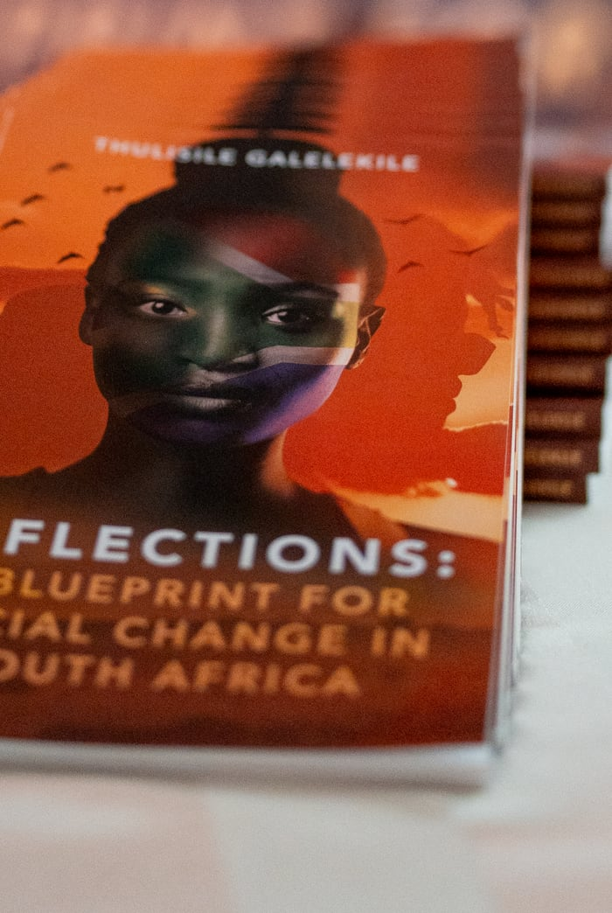

Pause. Look inward. Let truth meet you in the quiet.
Reflections is a practice of returning. Through guided journaling, one-on-one conversations, and contemplative prompts, we create the space for you to hear yourself again.
These are not therapy sessions and they are not coaching. They are quiet rooms, held gently, where you can notice what is already true.
Book a reflection ↗
The loudest voice in your life is not always your own.
Many of us spend years living according to expectations we never consciously chose. Authenticity begins when we learn to separate our voice from the noise around us.
A one-on-one container, held, confidential, unhurried.
Small groups that meet to reflect, witness, and return to self.
Immersive weekends away from the pace of everyday life.
What would change in your life if you stopped making decisions based on expectations and started making them based on truth?

A Blueprint for Social Change in South Africa
An honest, reflective work by Thulisile Galelekile that looks at the personal, social and structural realities shaping South Africa, and asks what it will take to build a country grounded in dignity, purpose and shared humanity. Part memoir, part call to action, Reflections invites the reader to pause, listen and imagine differently.
Written for citizens, leaders and change-makers who believe that meaningful transformation begins with honest conversations, and continues through the choices we make every day.
By Thulisile Galelekile.
Enquire about the book ↗